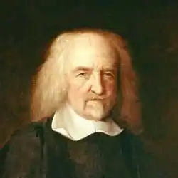

05 квітня 1588 — 04 грудня 1679
англійський філософ-матеріаліст, автор теорії суспільного договору
Народився в графстві Глостершир, в сім'ї не вирізнялась особливою глибокою освіченістю, запального приходського священика, через сварку з сусіднім вікарієм біля дверей храму втратив роботу. Виховувався заможним дядьком. Добре знав античну література та класичні мови. У п'ятнадцять років він поступив до Оксфордського університету, який закінчив у 1608 році. У 1610 році став наставником лорда Гардвика з аристократичної родини Вільяма Кавендіша (згодом графа Девонширського). До кінця життя залишався пов'язаним зі своїм учнем, який став його покровителем. Завдяки йому познайомився з Беном Джонсоном, Френсісом Беконом, Гербертом Чарберсі та іншими видатними людьми. Після смерті графа Девонширського був наставником його сина, мандрував з ним по Італії (де в 1636 році відвідав Галілео Галілея) і в 1637 році повернувся до Англії. На формування поглядів Гоббса значно вплинули Ф. Бекон, Г . Галілей, П. Гассенді, Р. Декарт та І. Кеплер. Гоббс створив першу завершену систему механістичного матеріалізму, що відповідав характеру та вимогам природознавства того часу. У полеміці з Декартом відкинув існування особливої ??субстанції, доводячи, що мисляча річ є щось матеріальне. Геометрія і механіка для Гоббса — ідеальні зразки наукового мислення взагалі. Природу Гоббс сприймає як сукупність подовжених тіл, що відрізняються між собою величиною, фігурою, місцезнаходженням та рухом. Рух він розуміє як механічний — як переміщення. Чуттєві якості Горбся не як властивості самих речей, а як форми їх сприйняття. Гоббс розмежовував протяжність, реально властиву тілам, і простір як образ, створений розумом ("фантазма"); об'єктивно-реальний рух тіл і час як суб'єктивний образ руху. Гоббс розрізняв два методи пізнання: логічну дедукцію раціоналістичної механіки "і індукцію емпіричної" фізики ". Гоббс — один із засновників" договірної "теорії походження держави. Держава Гоббс розглядає як результат договору між людьми, який поклав кінець природному додержавному стані "війни всіх проти всіх". Він дотримувався принципу початкового рівності людей. Окремі громадяни добровільно обмежили свої права і свободу на користь держави, завдання якого — забезпечення миру і безпеки. Гоббс дотримується принципу правового позитивізму і звеличує роль держави, яку він визнає абсолютним сувереном. У питанні про форми держави симпатії Гоббса — на стороні монархії. Відстоюючи необхідність підпорядкування церкви державі, він вважав за необхідне збереження релігії як знаряддя державної влади для приборкання народу. Був представником соціальних фізиків (напрям в історії). Етика Гоббса походить від незмінної чуттєвої " природи людини ". Основою моральності Гоббс вважав "природний закон" — прагнення до самозбереження та задоволення потреб.Чеснотиобумовлені розумним розумінням того, що сприяє і що заважає досягненню добра. Моральний обов'язок за своїм змістом співпадає з громадянським обов'язком, що випливає з суспільного договору. Вчення Гоббса справила великий вплив на подальший розвиток філософської та соціальної думки. ОСНОВНІ ТВОРИ "Левіафан, або Матерія, форма і влада держави церковної та громадянської" (1651, російський переклад — 1936). Філософська трилогія "Основи філософії": "Про тіло" (1655); "Про людину" (1658); "Про громадянина" (1642); ТВОРИ The English works, ed. by W. Molesworth, v. 1-11. — L., 1839-45 Opera philosophica, quae latine scripsit ..., ed. W. Molesworth, v. 1-5. — L., 1839-45. У російській перекладі: Левіафан, або Матерія, форма і влада держави церковного і цивільного (1651)